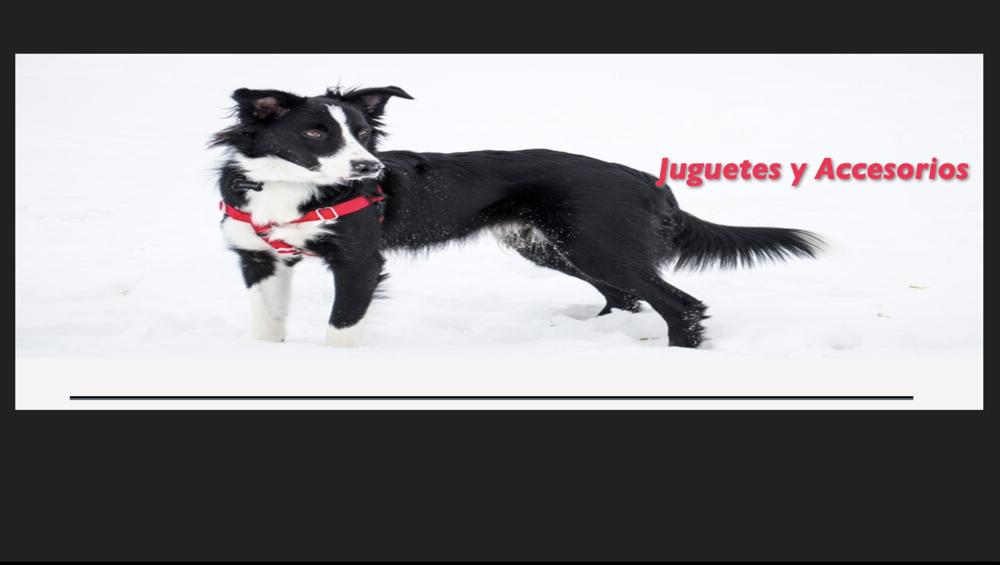
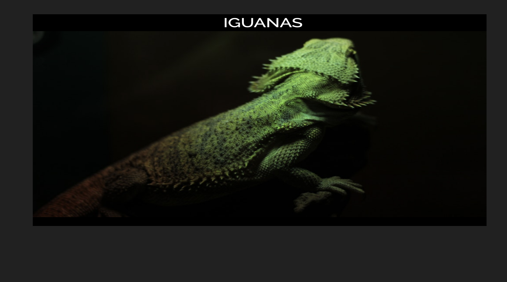

Portafolio

Proyecto css

Proyecto Flex

Fonoaudióloga con Máster en Neurorehabilitación ejerciendo como Key Account Manager en el área de desarrollo de software mediante la incorporación y fomento de habilidades comunicativas y sociales relevantes, como la escucha activa, empatía, negociación y resolución de conflictos. Enfocada en mantener ambientes laborales que permiten maximizar el potencial humano, permitiendo el correcto flujo de proyectos. A cargo de la gestión, control y coordinación de equipos técnicos y no técnicos.
Títulada de la Univerdidad de Concepción como Fonoaudióloga, ejercí durante 6 años esta hermosa carrera, para luego dar un giro a mi vida y decidir experimentar el vivir fuera de Chile. Luego de varios años viviendo en Canadá, Costa Rica y Japón, a mi regreso se me presentó la oportunidad de trabajar en una empresa de desarrollo de Software, iniciando con el cargo de Proyect Manager, para luego aceptar el desafío de Key Account Manager.